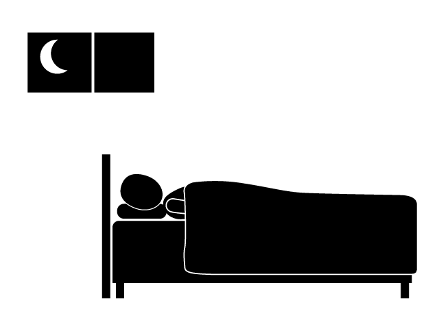
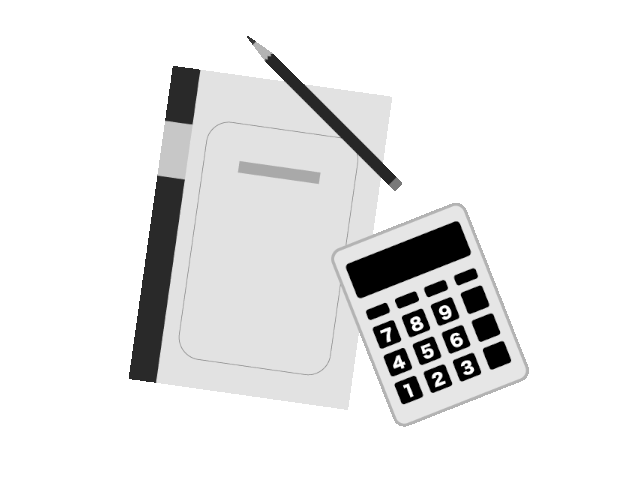
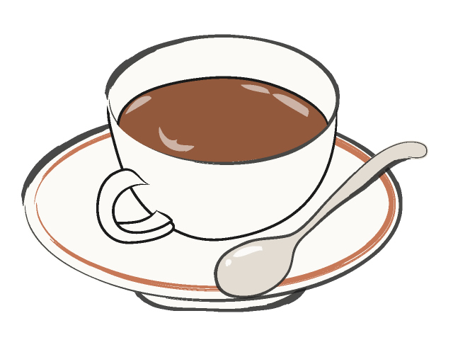
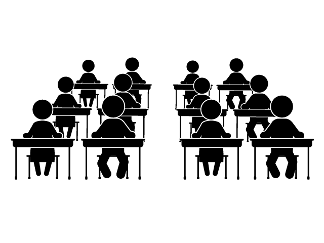
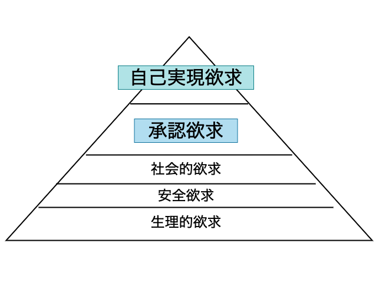
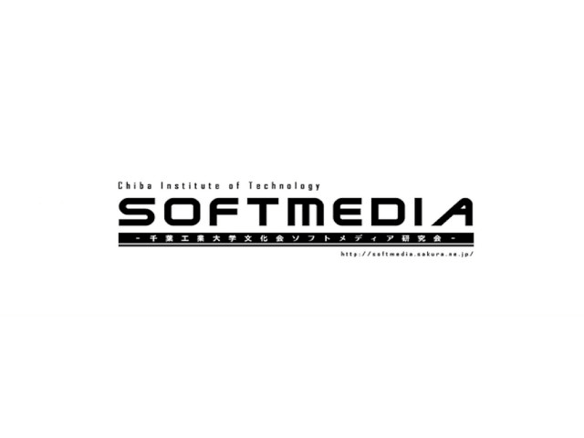

昨年度の記事でキズナアイに対する愛を執筆したDTM班4回生のSuperConsoleです．
今回は真面目な記事を書くので期待していた(?)人はごめんね．
内容は，創作活動をする上でその基盤となるメンタル管理の話．創作に対して自分が思っていることを書きたいなと思っています．
【基礎編】として，創作活動をする基盤となる日常生活においての重要なTips．【応用編】として，創作に対する向き合い方や考えについて．個人の視点から書きます．

人間にとって睡眠は大事なものです．大昔の人類は眠気を感じた時に寝て睡眠欲が満たされたら起きるという生活をしていました(平均睡眠時間:9～14時間)が，産業革命から労働時間という概念が登場し，平均睡眠時間は7～8時間まで減りました．現代の忙しい人の中には3～5時間しか寝ていない人も少なくありません．
しかし，勘違いしている人が多いのですが，睡眠はタスクです．To-Doリストに最初に入れて睡眠時間を確保した上でタスク管理を始めるべきだと考えています．最低でも7時間，理想は8～9時間を必ず確保してください．期限ギリギリであっても夜更かしせずに翌日に持ち越してください．
そもそも、睡眠とは一日の疲れやすり減った集中力を回復させる唯一の手段であり、適切な睡眠を取らないと集中力がすり減ったままの状態で朝を迎えてしまうことになります。[参考: 神・時間術*1]
睡眠を削って作業をしても、削った時間以上に翌日の集中力や時間を犠牲にしてしまうのです。愚の骨頂だ。
たまに「俺，基本忙しいから1日4時間しか寝れないんだよね～」と言う人がいますが，これは単純にタスク管理ができていないことを体現してるだけです．
もちろん，1日24時間では足りないほどに多くのタスクを抱えることもあります．精神科医でありYouTuber(毎日投稿)でありブロガー(毎日投稿)であり映画評論家でありこれらの仕事と並行して本を毎年1冊以上出版している樺沢紫苑氏は，影武者の存在を疑われるほどに膨大なタスクを日々消化している人ですが，それでも18時までには業務を終わらせて，睡眠時間は最低限確保しているそうです[*1]．
1日の生活は人それぞれでいろんな事情がありますが，目安として日を跨ぐ前に，おそくても深夜1時までには寝ましょう．でないと元気がでないから寝ろ．

大きなタスクがあるときや期限が迫っているときなど、深夜に作業をしがちです．深夜に作業をはじめて気づけば日が昇っている...なんてことがありますが、深夜帯は時間の密度が低く、過ぎるのが速いことが科学的に証明されています。*1
逆に早朝～昼にかけての時間は密度が濃く、15分や30分といった短い時間でも多くの進捗が出せます。個人差にもよりますが、朝の30分で夜の2時間と同じ作業量をこなせます。
人間は睡眠によって脳内の情報が整理され、リセットされた状態で朝を迎えます。適切な睡眠を取れた場合に限ってだが、このリセットされた状態の時に脳は100%のパフォーマンスを発揮できます。睡眠不足による眠気によって集中が阻害されることがあるため、基礎編1で睡眠をしっかり取ったうえで有効活用することがおすすめです。(余談ですが、朝に1日のTo-Doリストを作成したり、最も集中力の必要な作業を行うといいのだそう)
大体の場合、起床してから1〜2時間で通勤, 仕事, スマホ, 電車内広告, テレビ, 外部環境を無意識化で摂取し、夜には余分な情報で脳の容量がいっぱいになります。この状態ではパフォーマンスが出せないのです。人によるが40%〜50%くらいしか出ません。
実は、朝起きてから一番にスマホをいじったりテレビを見たりするのはゴールデンタイムを阻害しているのですねー。
気をつけて生きましょう。
(余談。自分がDiverseSystemのBreaks Challengeに参加した曲は、午前中に作りました。)

集中力を上げるのにかかせないのがカフェイン。ここ一番という時に摂取してパフォーマンスを120%にできる優れものです。厳密に言えば100%の状態を長く維持するための特効薬というのが正しいが。
そもそもカフェインは、集中した際に生じる睡眠物質のアデノシンをブロックすることで疲労を感じなくさせる作用があります。
カフェインを摂取してから効き始めるのは30分後くらいから、1～2時間後にカフェインによるパフォーマンス(カフェインの血中濃度)が最大になります。4時間ほどで落ち着きますがカフェインの効果自体は6時間続くので、午前中に摂取して午後はなるべく控えることがおすすめです。*3
ここ一番という状況が深夜帯になることが比較的多い皆さんは、ここ一番という状況が今日のうちに来るだろうことを見越して、前もって摂取しましょう。そもそも深夜帯に作業するのはパフォーマンスが発揮できないという話はしましたが、こういった間違ったカフェインの摂取がより悪化させているという可能性も疑ってみてはどうでしょうか。
カフェインブーストとゴールデンタイムの相乗効果を実感すると深夜の作業がいかに非効率化がわかるはずです。カフェインの最大パフォーマンスは摂取後1〜2時間後に発揮するので、それも踏まえて午前中のタスク消化をおすすめします。
さて、ここまでは基礎編として、メンタル向上に繋がる日常生活の見直しかたを書いていきました。ここからは応用編として、創作に対する向き合い方や考えについて書きます。

創作活動をはじめて、ある程度力が付いてくると自然と湧いてくる評価されたい欲求や承認欲求ですが、まず最初に解いておきたい誤解があって、それは評価と実力は何も関係がないということです。確かに実力がある人が評価されるのは当然ですし、評価されると創作意欲が湧くのは共感できますが、評価されないから実力が無いというのは間違っています。
この記事を書いている僕(SuperConsole)がいい例です。TwitterやSoundCloudといったSNSではいいねや再生回数がほとんど無いのにDiverseSystemのBreaks Challengeに受かり、名を轟かせている有名なクリエイターと肩を並べてアルバムに参加しました(DiverseSystemのChallengeシリーズは全曲公募のみで依頼枠が無い)。...評価とは比例しない実力と経験が身についていると思っています。
一旦脱線して、マズローの欲求5段階の話に入る。マズローの欲求5段階は、心理学者アブラハム・マズローが「人間は自己実現に向かって成長する生きものである」と仮定し理論として提唱されたものです。*4
主にマーケティングの用途で用いられますが、創作にも当てはめることは可能で、下位の欲求が満たされた時に上位の欲求が生じます。そして、上位の欲求を満たすことが成長と理論付けられているそうです。わからんけど。

この内、承認欲求に属するのが、Twitter, SoundCloud, Pixivなどで作品に対するいいねや閲覧数、再生数、コメントなどの評価が欲しいという欲求になります。この承認欲求が満たされてはじめて「自分の作りたいもの、自分のあるべき姿」を目指すようになる。この理論からすると、創作には評価がつきものだと考えざるをえないのですかね...
...はい、これは間違いです。ここまでの話はもう古いです。いつの時代の話をしているのか書いてて笑いそうになりました。
別に承認欲求が満たされなくても自己実現欲求は生じるし、飛び級でも自己実現欲求が満たされれば人間は成長します*5。
評価されることは壁ではなく寄り道であって、評価されたらラッキー！嬉しい〜！程度でいいのです。（創作だけで食べていくなどの特別な事情がない限りはおそらく）
というのも、昔は評価の基準が曖昧で、行動に起こさなければそれ自体知ることができなかった時代です。
それに比べ、現在はSNSや作品投稿サイトでアップさえすれば評価が数字となって返ってくる時代です。これを瞬時評価の時代*6なんて呼んだりするとかっこいいけど、つまり情報や評価が氾濫しているのが今の世の中です。
ヘンリー・ダーガー(1892〜1973)という誰にも見せることなく約60年間描き続けた芸術家がいます。彼の15,000ページにも及ぶ作品は死後、部屋の片付けを担当した大家が偶然に発見し、そこで初めて存在が明らかになりました。
誰にも評価されず、自己実現の為だけに創作し、生涯を全うしたヘンリー・ダーガー。彼のような創作活動のあり方も踏まえて一度自分が何のために創作をはじめてここまで来たのか。これからの創作をどうしていくか。見直してみてはどうでしょう。
...やっぱ評価がほしい！
わかります。そんな時は友達や先輩後輩、身の周りの人に作品を見てもらうのが手取り早いと思います。
顔が見えないネット上の数字より温かくて大切なものがそこにはあるんだよ...。
本音をいうと、僕(SuperConsole)の作る曲は、誰にも真似できないカッコよさがあって、誰にも真似できない音があって、誰にも真似できない世界観がある。そう思ってます。
自分は、DTMが一番本気で向き合っているものだから、全力投球しているならこれくらい思ってもいいでしょ。
自分自身が自分の作品を誰よりも好きになるのが理想だし、そうなれば創作がめちゃくちゃ楽しくなるし、モチベーションだって上がる。創作の原動力はそこにあるべきだと思う。
もし評価されていないと感じたとしても、ひたむきに創作を続けられることが努力の賜物だから。
...せっかくのアドベントカレンダーなので、感情で殴る項目があっても面白いんじゃないかなと思い、普段見せない自分をさらけ出してみました。何か感じ取っていただけましたか？
次の項目いきますね。
新しい世界に身を投じる、今まで行ったことのなかったイベントやコミュニティに参加するのってすごく緊張しますよね。しかし、いざ参加すると新しい発見があります。
自分の知らなかった人生を歩んできた人や同じ道だとしても全く違う苦労を重ねてきた人。そういった人たちと出会うことや新しい作品を目にすること、ないし時代と流行を知ること。終わった後に帰路につく。その時間を包む高揚感は何度参加しても忘れることはないですね。
自分もDTM活動をしている側で、エンジニアの勉強会に参加したりデザイナー同士の交流会など創作分野に縛られないコミュニティに身を投じています。
例えば、量子ゲート基礎勉強会、学生エンジニアLT大会、クリエイターズ総合交流会、サイバーセキュリティ勉強会、初心者向け機械学習エンジニア・データサイエンティスト勉強会、PaaS(Platform as a Service)勉強会、DTMer交流会、ベンチャー企業主催のITエンジニア向け問題解決カンファレンス、...(まだまだ書きたいけどこれくらいにします)
文字に映しきれないほど多様なバックグラウンドを持った人々と出会い、受け入れきれないほどの広い世界を見てきました。まだ世界の0.0001%も知れていないと思っているし、これからの人生でどのくらい知れるかも知りません。
新しい世界に身を投じると、創作活動がいかに複雑で簡単に示せるものではなくて多くのモノを動かしているか、どれだけの人々が共感を分かち合っているかを目にすることができます。
みんなが違っていて、みんながそれぞれの価値観を持って生きている。
僕がこの記事を通して伝えたかったことです。

ソフメって素晴らしいです。
プログラム班とマルチ班とDTM班が一つになっていて、
ソフメに所属していると班を越えた交流も頻繁にできて、
創作活動していてよかったなぁと思える日々を過ごしています。
また、分野の壁を越えて外の世界に触れられたのは、ソフメという帰る場所があったからだと思っています。ありがとうソフメ。
...まさにめぐりあい。めぐりあえたんですね。めぐりあいソフメ。
Copyright © 2019 SuperConsole All Right Reserved.
-Official site: superconsole.work
-Twitter: @_SuperConsole